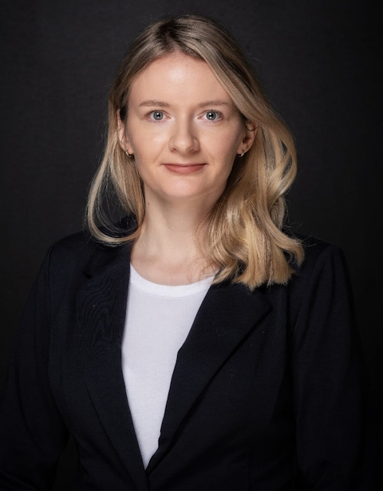

Sofia Lisina, M.Sc.
Interests: Graphic design | UX/UI | Brand design | Digital marketing
I am a researcher from Åbo Akademi University, working with bionanomaterials and 3D printing for drug delivery applications. I was always fascinated by the art world, in particular well-known artists Frida Kahlo, Salvador Dali, Pablo Picasso. In my current work, I am trying to be creative, to think boldly, and to implement graphic design for better visualisation. In addition to my love to science, I want to boost my art skills further and to work as a graphical/brand designer in a foreseeable future.
- Skills
-
 Adobe
Illustrator
Adobe
Illustrator Adobe Photoshop
Adobe Photoshop
Adobe InDesign  Figma
Figma
 Autodesk Fusion
Autodesk Fusion
 Corel Painter
Corel Painter Microsoft Word
Microsoft Word Microsoft Excel
Microsoft Excel Microsoft
PowerPoint
Microsoft
PowerPoint -
Data visualisation Data analysis Information graphics 3D modeling Typography Layout Project management (scrum) Communication Creativity

 +358
44 923 11 56
+358
44 923 11 56 sofia.lisina@abo.fi
sofia.lisina@abo.fi- Sofia Lisina
 Turku, Finland
Turku, Finland


- Education
- 2023–present Professional training: “Graphic and UX/UI designer” (online), Educational Center for CAD and Design, Faculty of Software Engineering and Computer Technology, ITMO University, Saint-Petersburg, Russia.
- 2017–2019 M.Sc. degree (with
distinction) in Chemical Technology, Faculty of Drug Industrial
Technology, St. Petersburg State Chemical and Pharmaceutical University (SCPU),
Saint-Petersburg, Russia.
Thesis: “Development and investigation of potential drug delivery systems”. - 2007–2012 Specialist degree
(corresponds to master´s degree) in Chemical Engineering of
Organic Substances, Faculty of Chemical Engineering and Biotechnology, St.
Petersburg State Institute of Technology (Technical University), Saint-Petersburg,
Russia.
Thesis: “Synthesis of imide-containing phthalodinitriles and phthalocyanines on its basis”.
- Experience
- 2019–present Researcher, Faculty of Sciences and Engineering, Pharmaceutical Sciences Laboratory, Åbo Akademi University, Turku, Finland.
- 2021–2022 Pharmaceutical developer (Quality control), Curify Oy, Helsinki, Finland.
- 2013–2017 Engineer, FSUE RRC “Applied Chemistry”, Saint-Petersburg, Russia.
- 2012–2013 Assistant chemist,
Department of Chemical Technology
of Organic Dyes and Phototropic Compounds, St. Petersburg State Institute of
Technology (Technical University), Saint-Petersburg, Russia.